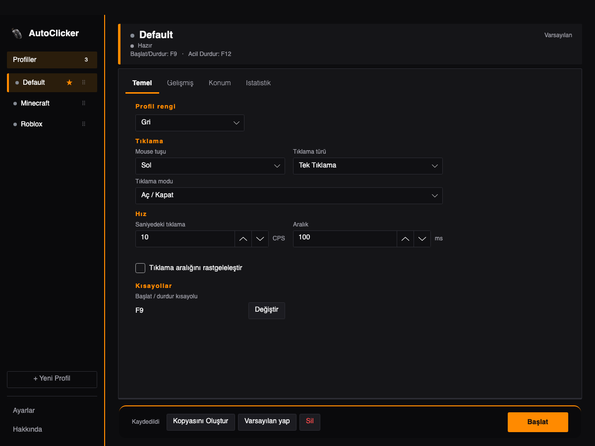

Saniyede 500 tık'a kadar hassas, hafif bir otomatik tıklayıcı. Hızı ayarla, kısayola bas, gerisini bırak.
Reklamsız · Hesap gerektirmez · Windows'ta kurulum gerektirmezSaniyede 0,001 ile 500 tık arasında sabit ya da rastgele aralık. Tek veya çift tıklama; sol, sağ ve orta tuş.
Başlat ve durdur için kendi tuşunuzu seçin. Basılı tutarak tıklama ve F12 ile anında acil durdurma.
İmlecin olduğu yerde ya da sabit bir noktada tıklayın. Tıklama sayısı, süre sınırı, başlangıç gecikmesi ve burst modu.
Her oyun ya da uygulama için ayrı profil. Adlandırın, renklendirin, sıralayın; varsayılanı seçin. Türkçe ve İngilizce arayüz.
Her profilin kendi hızı, tıklama modu ve kısayolu var. Menü çubuğu simgesinden de profil seçip başlatabilirsiniz (Mac).

ZIP'i klasöre çıkarın, AutoClicker-Baslat.bat dosyasına çift tıklayın. Kurulum gerekmez.
Windows için indirDMG'yi açın, AutoClicker'ı Uygulamalar klasörüne sürükleyin.
macOS için indirEvet. Tüm özellikler ücretsiz, reklamsız ve hesap gerektirmez.
Çoğu uygulama ve oyunda çalışır. Yönetici yetkisiyle açılan programlar ve bazı oyunların koruma sistemleri otomatik tıklamayı engelleyebilir.
Uygulama ticari bir sertifikayla imzalanmadığı için Uygulama ticari bir sertifikayla imzalanmadığı için Windows SmartScreen ve macOS ilk açılışta uyarı verebilir. Mac'te sağ tıklayıp Aç'ı seçin; Windows'ta Ek bilgi → Yine de çalıştır deyin.